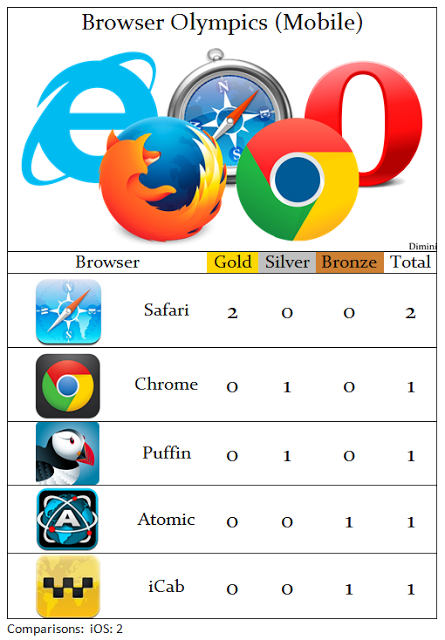

Сравнение браузеров для iOS (август 2013)
 Сегодня мы публикуем наше второе сравнение браузеров для iOS. Наше предыдущее сравнение от августа 2012 года можно прочитать здесь. Со времени нашего первого сравнения наша систем оценки изменилась. Список тестируемых браузеров также изменился: были исключены пробные версии браузеров, а часть браузеров была заменена на другие. Результаты всехпротестированных браузеров, а также сравнение наиболее популярных из них приведены ниже.
Сегодня мы публикуем наше второе сравнение браузеров для iOS. Наше предыдущее сравнение от августа 2012 года можно прочитать здесь. Со времени нашего первого сравнения наша систем оценки изменилась. Список тестируемых браузеров также изменился: были исключены пробные версии браузеров, а часть браузеров была заменена на другие. Результаты всехпротестированных браузеров, а также сравнение наиболее популярных из них приведены ниже.
Результаты наиболее популярных браузеров:
Основное(размер файла, цена, поддержка языков и ОС, и т.д.)

Функционал(вкладки, загрузки, история, синхронизация, сжатие траффика и т.д.)

Производительность(результаты по различным бенчмаркам, таким как Peacekeeper, Sunspider и т.д.)

Итоговые результаты

Наш победитель - Safari, так как это единственный браузер с доступом к более быстрому Javascript движку Nitro JS. Следом идёт Puffin, показавший высокие результаты по производительности, благодаря облачным вычислениям. Atomic третий.
Полная таблица результатов всех протестированных браузеров выглядит следующим образом

Также приводим медальный зачёт по всем проведенным сравнениям для iOS

13.08.2013 Автор: Администратор